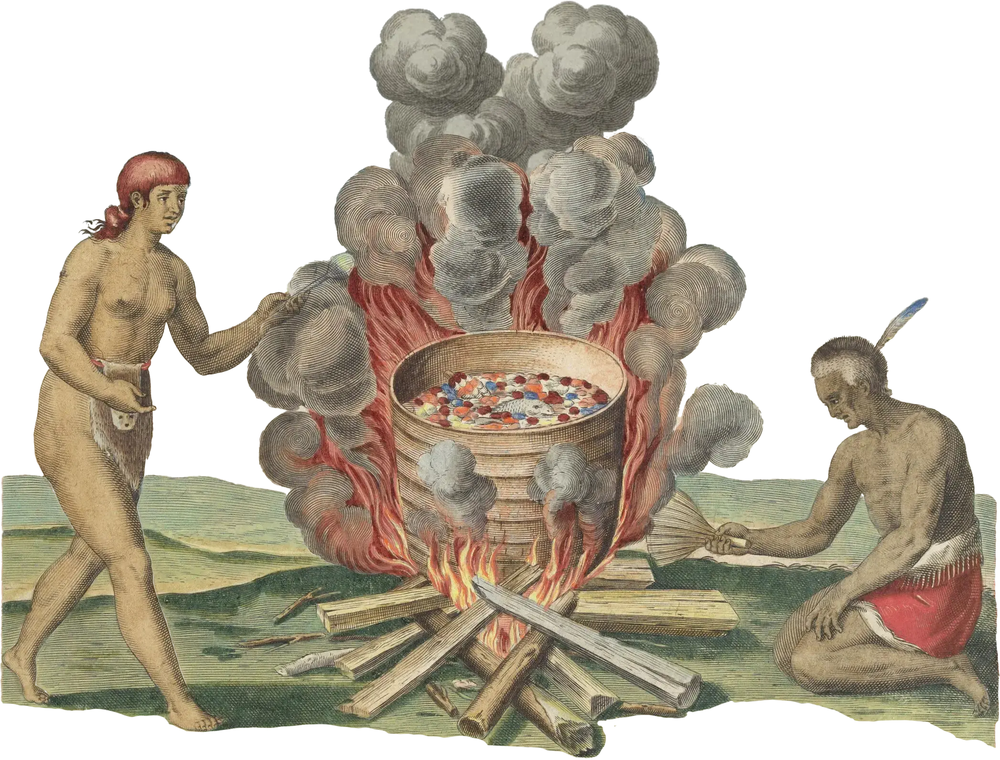
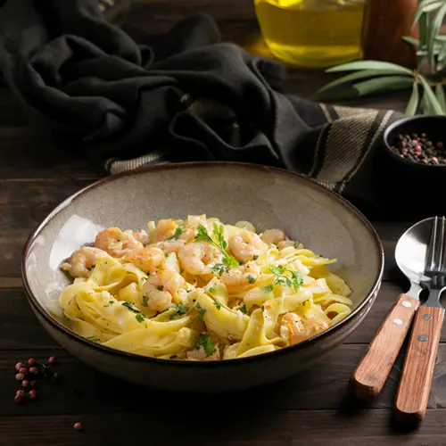

Popular Searches
Chart the perfect course for your palate
Pair Your Fruit Wine, Discover Our Map to a More Interesting Glass.
Know the Perfect Pair
Match the Weight of Your Dish
A great pairing starts by matching the body of your drink to the weight of your food. Choose a light, refreshing spirit like a botanical gin or a crisp citrus-forward white wine for delicate dishes such as seafood or salads. For heartier meals like grilled meats or rich stews, opt for a bold red wine or a warming, aged spirit to stand up to the stronger flavors without being overwhelmed.
Balance the Dominant Taste
Focus on the main flavor of your dish and choose a drink that either complements or contrasts it. For spicy or sweet foods, a medium-sweet fruit wine can provide a pleasant, balancing counterpoint. For rich, creamy, or fatty dishes, a drink with brighter acidity—like a medium-dry wine—will cleanse your palate beautifully. Remember, the best pairing is ultimately the one you find most enjoyable, so feel free to trust your taste and experiment.


Lolo Art Whiskey
Spirit • InternationalA bold and spirited expression that captures the essence of Filipino craftsmanship. Rich and warming, this whiskey pairs beautifully with cigar accompaniments and contemplative moments.


Malibugold Medium Dry Red Wine
Red WineA refined medium-dry red wine made from the rare Malibugold fruit with bright acidity and subtle complexity. Elegant and versatile, this wine transitions seamlessly from appetizers to main courses.


Malibugold Medium Sweet Red Wine
Red WineA luscious medium-sweet red wine celebrating the natural sweetness of Malibugold fruit. Smooth and approachable with balanced acidity, this wine is perfect for those who enjoy fruit-forward flavors.


Bignay, Pitaya Red Wine
Red WinePremium Filipino red wine crafted with a blend of exotic Bignay and Pitaya (dragon fruit). Smooth and distinctive with warm, complex notes that elevate any dining experience.


Calamansi White Wine
White WineA refreshing white wine made from Calamansi sourced from Tagudin, Ilocos Sur. Citrus-forward with bright, zesty flavors that complement lighter fare perfectly.


Mango White Wine
White WineA bright and aromatic white wine celebrating the sweetness of Philippine mangoes. Refreshing with tropical nuance and balanced acidity, this wine captures the essence of island living.
Start Finding the Perfect Match
Explore our full collection of tropical wines and find your perfect match.
Shop All WinesImage Credits
Historical illustrations on this page are sourced from the Public Domain Image Archive / Harvard University:
- Traditional fish broiling: Image sourced from the Public Domain Image Archive / Harvard University
- Traditional meat stew preparation: Image sourced from the Public Domain Image Archive / Harvard University
- Gathering around fire: Image sourced from the Public Domain Image Archive / Harvard University